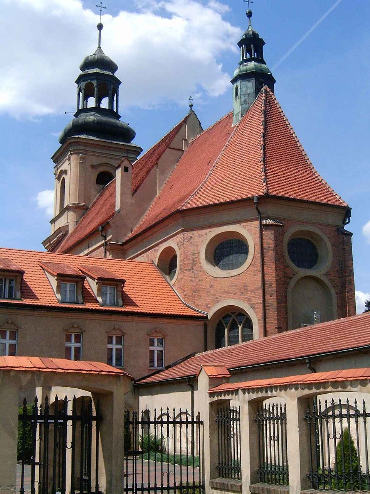

Introduction
Wschowa is a picturesque town in western Poland, located in the Lubusz Voivodeship near the border with Greater Poland. With a population of around 14,000 residents, Wschowa combines historical charm with modern life. The town is known for its beautifully preserved old town, rich history, and vibrant local culture.
History
Wschowa has a long and fascinating history dating back to the 12th century. It was granted city rights in 1345 by King Casimir III the Great. Over the centuries, Wschowa became an important trade and cultural center between Greater Poland and Silesia. During the Renaissance period, the town flourished as a royal city and a hub for Protestant culture. Its history is reflected in the town’s architecture, cobblestone streets, and old churches.
Main Landmarks
Market Square
The heart of Wschowa is its historic Market Square, surrounded by colorful townhouses and the Town Hall, originally built in the 16th century.

Franciscan Monastery and Church
This Baroque-style complex is one of the town’s most recognizable landmarks. It holds many valuable religious artifacts and artworks.

Defensive Walls
Parts of Wschowa’s medieval defensive walls are still preserved and can be visited. They offer a glimpse into the town’s medieval past.

Tourism
Today, Wschowa attracts visitors interested in Polish history, architecture, and nature. The town’s peaceful atmosphere, local museums, and nearby forests make it an ideal destination for a weekend trip. You can also enjoy regional cuisine at cozy restaurants and explore the scenic countryside surrounding the town.
External Resources
Official Wschowa Website (Polish)Wschowa News Report (Ziemia Wschowska)
Wschowa on Wikipedia